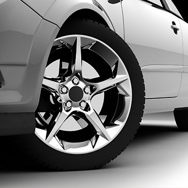

CIDAK AUTO PARTS LTD is committed to leading the automotive aftermarket toward environmental sustainability. All CIDAK friction lines feature 100% copper-free ceramic and semi-metallic friction materials, fully compliant with global EPA regulations.
Our roadmap includes automated CNC turning, robotic welding, and digital quality control spectroscopy to ensure 0% defect rates across all product lines.
